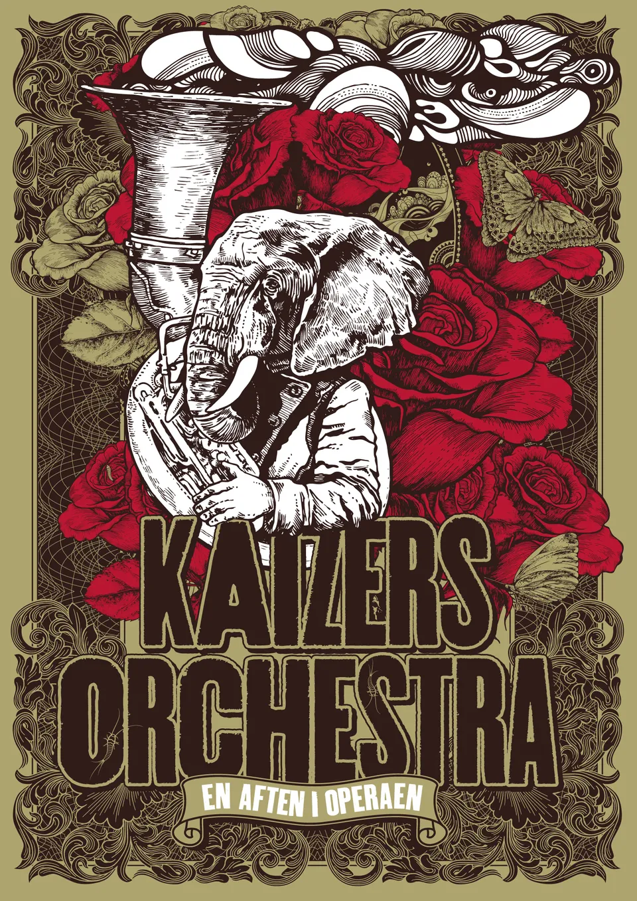
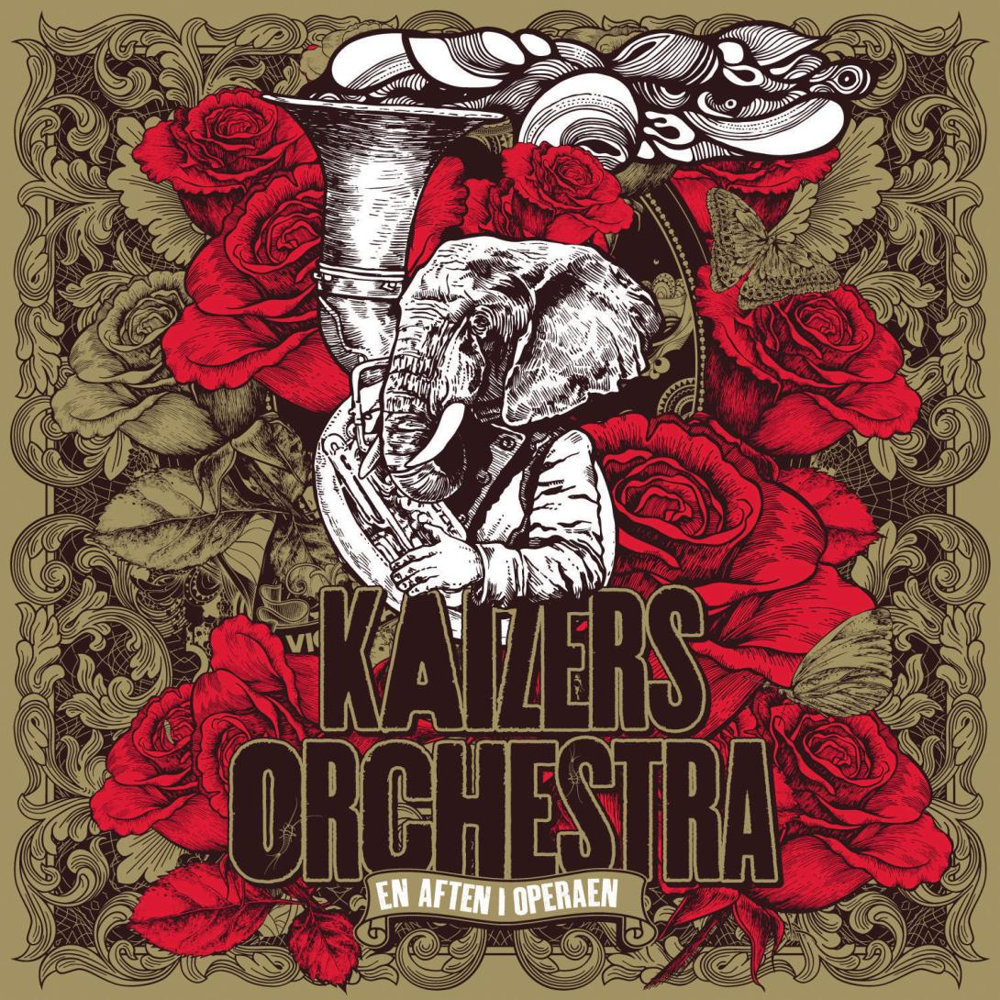

En aften i Operaen
|  |  |
|
En aften i Operaen er et av Kaizers Orchestras høydepunk. De fikk fremføre hele Violeta Violeta Volume III med dirigent Erlend Skomsvoll, KORK og Oslo Filharmoniske kor. Dette prosjektet markerte enden på Kaizers musikalske reise og understrekte bandets musiklaske utvikling. Én av de seks kveldene ble filmet og gitt ut på DVD.